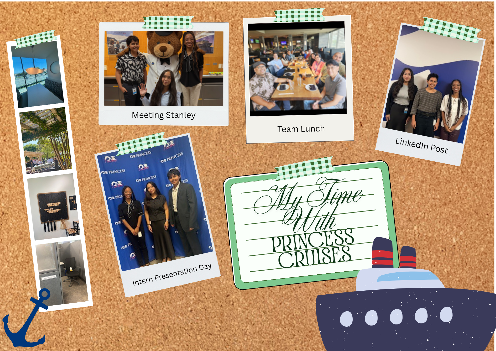

Traveling Across the East Coast
Boston & Cambridge
This summer, I flew by myself for the first time to visit my friends in Boston. While I was there, I stayed with one of my closest friends who was living there for the Summer to complete research.
Work Gallery
Below are some moments with the team, our events, and other photos from around the office!
My Favorite Things About Working With Princess
- The CEE Team
- Each and every one of my colleagues is someone I can look up to. They're brilliant, hard working, and they set an exemplary standard for what it means to be an engineer and a leader. I learn something new from them everyday. I am incredibly thankful to be in a position to learn from such talented individuals.
- Collaboration Across Departments
- As a team who builds enterprise solutions, our stakeholders are primarly other departments within the company. I really enjoy getting to meet other people of different backgrounds- besides engineering- and learn about subjects like finance, operations, etc. There is always room for collaboration and learning about other industries.
- Company Events
- Princess Cruises makes an effort to connect with their employees. There have been a multitude of office events and gatherings! At the very first event I attended, I won a company raffle and got some headphones!